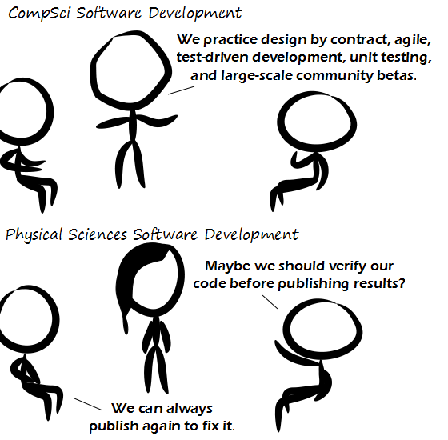

Comic JK 874
When I Feel Like It
⇤
<
?
>
⇥

⇤
<
?
>
⇥
Forum
.
RSS
.
Digg
.
Facebook
.
Reddit
.
Twitter
.
Stumbleupon
Enter your thoughts on number 874 here. Please, no spamming, trolling, phreaking, or correctness proofs. Since when did Computer Science get itself all tied up with industrial processes? > Ya, this sounds much more like software engineering to me, where Comp Sci is abstract software concepts, and software engineering is applying Comp Sci plus industrial processes to actually get things done. Dunno, I'm CompSci and do the latter. > You're clearly not working a real job yet. >> Game development from a few companies: just throw it at them we'll fix the bugs in patches. >>> Not really... More like "we're done on X.Y.!" on X.Y.: "now release it!" "but we're not done yet!" "shut up and release it!" "...okay..." >>>>Is X.Y a date or a version? >>>>> Date >>>>>>That's an unusual format and unusual letters to signifiy a date. >>>>>>>Yes, should be YYYY-MM-DD ! >>>>>>>No, it should be DD/MM/YY >>>>>>>>No, this: MM/DD/YY >>>>>>>>>OK, MM/DD/YY makes no sense at all. There's no order to it. >>>>>>>>>>another vote here for ISO-8601: YYYY-MM-DDThh:mm:ss :) >>>>>>>>>>>what about: MMM. DD, YYYY >>>>>>>>>>>>What the hell is that? >>>>>>>>>>>>>Kick that humanities major out of here! >>>>>>>>>>>>>>stardate YYXXX.XX >>>>>>>>>>>>>>>MOre like YYYYWW.D.H >>>>>>>>>>>>>>>>I like 0xSSSSSSSSSSSSSSSS >>>>>>>>>>>>>Depends on if you want other people to buy your software or not. >2012 >thinks software developers actually do this What is with the deletionists???? You freaks should be Wikipedia editors. >Wikipedia banned them, so they came here. >>banned them ? [citation needed] >>>I don't think it was serious. >>>>This is not a place for opinions. >>>>>Is that you, Jimmy Wales? >>>>>>Yes, and I'm only going away if you give^H^H^H^H donate lots of money right now. >>>>>>>Commie Bastard! . . . . . . . . . . . . . . Oh my fucking god. THIS COMIC DOES NOT HAVE A "YOUR MOTHER*" JOKE! >Peer review according to your mother: Trying to find quality dorky college boys by looking at edited photos of them and not of their bedrooms. (*/anus/daughter/father/horse). Yes I know you came here to change it to something funny, I was doing that too, but let's leave this one unchanged for the future OK?